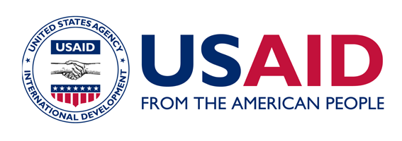

A Study on State of Social Inclusion in Nepal (SOSIN) 2017-2020
USAID/NEPAL & Central Department of Anthropology, Tribhuvan University, NEPAL
The State of Inclusive Governance in Nepal
Caste, Ethnic and Gender Dimensions of Inclusive Development
Nepal’s Achievements Towards Agenda 2030: Tracking Progress on the Sustainable Development Goals
Community Disaster Resilience Study on Earthquake 2015 and Aftermath
